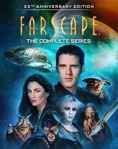
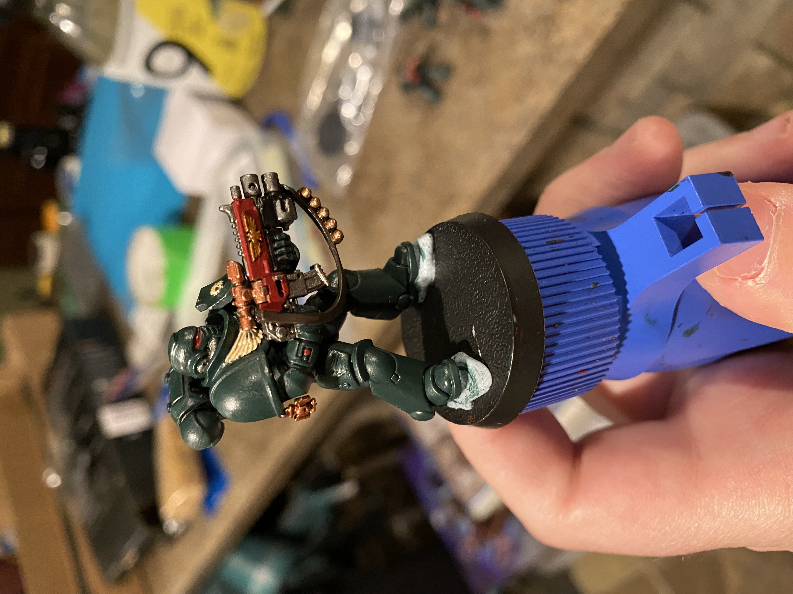
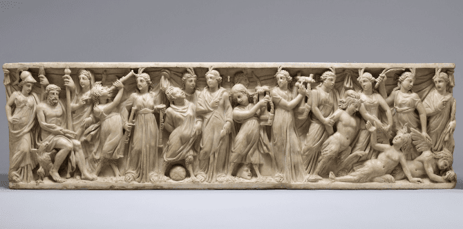

Hobbies & Interest
- RockHounding/Mineral Collection: I like to go out into the wilderness and look for various types of minerals like Pastelites,Agates, etc.

- Reading: I have had a strong interest in reading since childhood with a particular emphasis on fantasy series.

- Gaming: I like to play games of all types and mediums as I have found them to be quite engaging both narratively and mechanically.

- Movies and Television: I have always had a strong interest towards various forms of media but I often quite like to break down and analyze movies and television shows.

- Miniature Building: I collect, build, and paint Warhammer 40k miniatures as I enjoy the creative process and hope to one day play the tabletop war game.

- Mythology: I have always been rather fond of studying various cultures' mythologies particularly that of the Greeks and Japanese.
